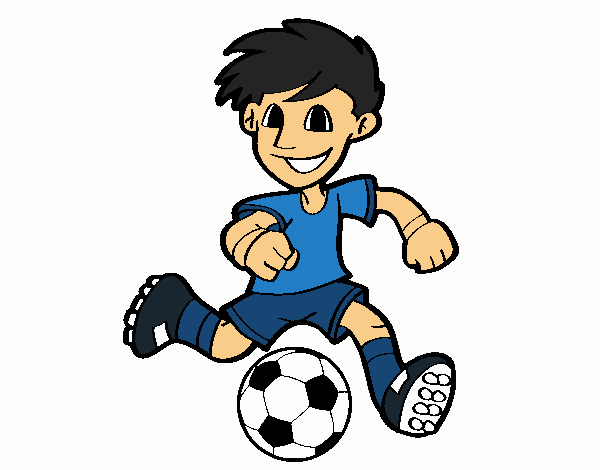

 La historia del fútbol se considera a partir de 1863, año de fundación de The Football Association, aunque en sus orígenes, al igual que los demás códigos de fútbol, se remontan varios siglos en el pasado, particularmente en las islas británicas durante la Edad Media.12 Si bien existían puntos en común entre diferentes juegos de pelota que se desarrollaron desde el siglo III a. C.2 Los primeros códigos británicos que dieron origen al fútbol se caracterizaban por su poca organización y violencia extrema.3 No obstante, también existían otros códigos menos violentos y mejor organizados. Quizás uno de los más conocidos fue el calcio florentino, deporte de equipo muy popular en Italia que tuvo incidencia en los códigos de algunas escuelas británicas.4 La formación definitiva del fútbol tuvo su momento culminante durante el siglo XIX(19).